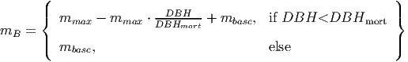
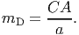
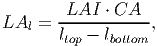
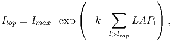
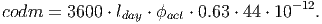
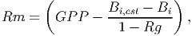
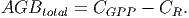
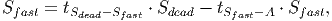

Model Description¶
2.1.1 Purpose
2.1.2 State variables and scales
2.1.3 Process overview and scheduling
2.1.4 Design concepts
2.1.5 Initialization
2.1.6 Input
2.1.7 Submodels
2.1 Model Description
The model structure was largely based on the FORMIND model (K�hler and Huth, 1998), following the description provided by Fischer et al. 2014 (See also R�ger et al. (2007) for another version and application of FORMIND). However, the code that implements the model was rewritten in Python as an Object-Oriented, open-source module (See ”Objected-Oriented implementation” below). This description follows the ODD protocol, proposed by Grimm et al. 2010. A few significant changes were made to the model structure and implementation, which are discussed in detail in sections 3.2 and 3.3.
2.1.1 Purpose
The Tree model is an individual-based, spatially explicit model developed to study the long-term impacts of logging on carbon stocks and carbon sequestration in uneven-aged mixed species tropical forests.
2.1.2 State variables and scales
The model is three-dimensional, grid and individual-based. Ecological processes are formulated in three organizational scales: individual trees, patches and landscape. In addition, cohorts are an extra level between trees and patches and group trees of the same plant functional type (PFT) and age, located within a given patch. However, this level is used for purely computational reasons and no attributes are accessible (see section 3.2.1 for more details on cohorts and section 3.3 for more details on PFTs).
Each tree is represented individually from birth to death.To enable the dynamics of species-rich forests to be simulated,species with similar functional characteristics are grouped in PFTs. Groups based on shade-tolerance and maximum height are defined (however, single species can be represented just as easily).
Patches are squared cells with unique x and y coordinates and area equivalent to the crown area of a mature tree (parameter a in table 1). Patches are divided in small vertical layers (δh in table 1), which are used to represent light diffusion and interception.Light availability is calculated for each layer, as well as the sum of leaf areas. Patches are linked to their neighbors to allow trees to fall into another patch. Forests are simulated in monthly time steps and normally 50 to 100 years will be simulated.
Finally, the landscape is the rectangular grid that results from the combination of all patches. The grid is represented as a torus (i.e. with periodic boundaries). The attibutes for each level are listed the table below .
| Tree | Patch | Landscape
| ||||||
Identification (id) | Position | Net carbon exchange (NCE)[1.39] | ||||||
|
|
|
||||||
|
|
|
||||||
| Area (a) |
|
||||||
Crown length (CL) [1.24] | Seed bank |
|
||||||
Crown diameter (CD) [1.25] | ||||||||
Crown area (CA) [1.26] | ||||||||
Above ground biomass (B) [1.21] | ||||||||
Age | ||||||||
Height (H) [1.23] | ||||||||
Patch | ||||||||
Plant functional type (PFT) | ||||||||
Position | ||||||||
2.1.3 Process overview and scheduling
Within each time-step (1 month) the model proceeds in the following order: re-calculation of light availability within the forest, growth and update of geometrical characteristics. Mortality and recruitment events occur once a year (every 12 time-steps), while logging events are executed as scheduled (the default is every 25 years).
Within each patch, all trees compete for light and space following a gap model. Light availability is assumed to be the main driver of tree growth and forest succession. For each patch, the light availability is calculated according to an extinction law that depends on the vertical distribution of the leaf area. Light availability is then determined for each tree.The same equation is used to calculate the light incidence at the soil level (submodel III). Annual growth is calculated based on the physiological processes of photosynthesis (submodels IV and V) and respiration (submodel VI). Growth is expressed as the the monthly increment in Aboveground Biomass (submodel VII). Biomass acquisition is translated into DBH increment, which is used to update height, crown area and other geometrical attributes through allometric equations (submodel VIII). Tree mortality can occur either through self-thinning in dense patches, stochastic mortality, gap creation by large falling trees or logging (submodel II). Recruitment (submodel I) occurs when the light intensity at forest floor exceeds a PFT-specific threshold (parameter Iseed; see table 3). At the beginning of each year, a PFT-specific number of seeds (defined by parameter Nseed) is randomly distributed across all the patches. The effective recruitment rates for each PFT describes the number of seeds which met the minimum light and space criteria to grow over the DBH of 1 cm in each year. At the end of each year mortality events are executed sequentially. If logging operations are scheduled for that year, they occur after natural mortality events. Section 3.1.7 describe each of the submodels and figure 2 illustrates their order of execution.
2.1.4 Design concepts
- Emergence:Patch level state variables such as light availability at the ground level and vertical layers, as well as landscape level variables such as carbon stocks and net carbon exchange, depend on abundance and spatial distribution of individual trees.
- Sensing:Individuals sense their size (biomass), which affects growth.
- Interactions: Trees in the same patch compete for light and space (self-thinning). Trees in different patches may interact when tall trees fall and damage smaller ones.
- Stochasticity: All mortality processes are described as probabilities. Non-zoochoric seed dispersal follows a random distribution (uniform or pareto, according to the dispersal mode).
- Collectives: Cohorts are collectives of trees with the same age and Functional Type which are located in the same patch. Trees in the same cohort have the same size.
- Observation: Observations can be made at the individual (Biomass, Leaf Area and any other individual attribute), population (Abundance, totals and summary statistics for any individual attribute) or community levels (Abundance per PFT,totals and summary statistics for any individual attribute, Net Carbon Exchange per year and total carbon stocks in soils, deadwood and living aboveground biomass). Outputs can be recorded hierarchically in a HDF5 database. Some plotting functions are also available for the most commonly used data.
2.1.5 Initialization
A simulation can be started with a treeless area, in which case a seed bank is generated by randomly distributing a predefined number of seeds (Nseed) across all patches. The total number of seeds is a PFT-specific parameter (Nseed) and a uniform distribution is used to determine the position of each seed in the grid. The model can also reconstruct an existing forest from a data file containing information about trees (position in space, id, age, DBH and the PFT to which they belong), the seed bank (how many seed of each PFT are available in the soil) and landscape level carbon stocks. This information can be generated by pausing and saving an ongoing. To test different scenarios on a mature forest, a combination of the two features can be used in order to reduce computation times. Starting from a clear area, the model runs for a long period (e.g: 300 years) and the resulting forest can be saved and used multiple times as the starting point of different scenarios that run for shorter periods of time (e.g: 50 years).
2.1.6 Input
No inputs are used. Site conditions are assumed to be homogeneous and there is no inter-annual variability of environmental conditions.
2.1.7 Submodels
- I.
- Recruitment
Seed dispersal can be implemented by two methods. The first Randomly places seeds across the entire landscape, using the Nseed parameter to determine the number for each PFT. The second uses a power to disperse the seeds around each tree, based on the fruits available. Each fruit is assumed to contain only one seed. The number of fruits for each tree is calculated by:

(1) Where DBH is the Diameter at Breast Height and afruits is a adjusting factor.
The probability density distribution for the power function is given by:

(2) Each PFT has a light requirement for germination (Iseed). At the beginning of each timestep, light incidence a the floor level is calculated (at a patch level). In each patch, all seeds have their PFT-specific light requirement tested against the light incidence. If Ifloor > Iseed, then the vertical layer closest to the soil (i.e: the one that the seedling will occupy if it is established) is checked for space. If that layer is not yet fully occupied by seedlings, the current seed is then converted into a small tree with DBH=1cm.
- II.
- Update of geometric attributes
A series of allometric equations is used to define the attributes of a tree. Trees are represented as two cylinders (one for the stem and another for the crown) and are addressed by the index i when applicable. See figure 1 (a) for an illustration.
When an individual grows (submodel VIII), the biomass gain is translated into DBH increment by the following equation:

(3) where H is the height of the tree, f the form factor that for the idealized cylindrical shape assumed for the stem, ρ the wood density and σ the fraction of stem wood biomass from total tree biomass.
All the other geometrical characteristics are updated based on the new DBH.
Height(H) is determined by:

(4) Where h0 and h1 are type specific parameters.
Crown length (CL) is a function of height:

(5) Crown diameter is proportional to stem diameter,

(6) Since the crown is represented as a cylinder, Crown area (CA) is

(7) The leaf area index of a tree (LAI) represents the total amount of leaf area per unit of crown projection area, which relates to the photosynthetic capacity. It is calculated as a function of DBH:

(8) whereby l0 and l1 are PFT-specific parameters.
- III.
- Tree mortality
(1) Background mortality: each tree has a base mortality (m
 (9) where mmax is the maximum size-dependent mortality of small trees and DBHmax is the DBH up to which tree mortality is increased.
(2) Self-thinning: Mortality is increased for trees in dense patches due to competition for space.
(10) where mC is the crowding mortality and CCAmax is the maximum Cumulative Crown Area (which sums the crown areas of all trees with the crowns in that height layer).
(3) Damage mortality
When a large tree dies, it might fall and inflict its neighbors. Large trees are those with DBH above the size threshold defined by the parameter DBHfall. Damage is inflicted on the small trees (DBH < 50 cm) at least 1 m shorter than the falling tree if they are located on the area where the crowns is going to land. Damage is expressed as the ratio between the crown projection area of the falling tree (see submodel VIII for details on the calculation of CA) and the patch area (parameter a). The direction of the fall is chosen randomly with equal probability.
 (11) The tree mortality processes are executed sequentially for each tree. A random number between 0 and 1 is drawn from a uniform distribution and the tree dies if the number is lower than mB, otherwise the process is repeated for mC and mD. When a tree dies, its carbon content (44% of the biomass, according to Fischer et al. (2014)) is transferred to a temporary stock Smort, which is subsequently used to update the dead wood stock Sdead as described in equation 35.
- IV.
- Competition for light
Each patch is vertically divided in small layers of width Δh. Light availability is calculated for the individuals within each patch taking into consideration the canopy layers they occupy. If a patch has only one tree, all the light will be available to that individual.Due to self-shadding, higher portions of the crown intercept more light, reducing the availability for the layers below Similarly, with the addition of other trees to the same patch, the tallest ones shade the smallest.
For each patch and height layer, the leaf area accumulated by all individuals is calculated. Each tree contributes parts of its crown leaf area to those height layers which are occupied by its crown. The bottom and top layers are defined by:

(12) 
(13) where H is the tree’s height and CL its crown length.
A tree’s leaf area index (LAI) contributes equally to each of the patch layers between lbottom and ltop:
 (14) whereby LAl is the tree’s contribution to the leaf area of vertical layer l of that patch and CA is its crown area. The multiplication of LAI by CA gives the leaf area of a single tree in m2.
To calculate the leaf are per layer (l) at the patch level LAPl, the contribution of each tree’s leaf area per layer (LAl) relative to the patch area (a) is summed:
(15) .
With this information it is possible to calculate the radiation that each tree is able to intercept at the top of its crown (Itop):
 (16) where Imax is the irradiance above the forest canopy and k the light extinction coefficient. Note that only those layers above ltop are used.
- V.
- Photosynthesis
Photosynthesis is based on the incoming irradiance at the top of each tree (Itop). Following the approach described by Thornley and Johnson (1990), the cylindrical crown is considered as a stack of thin disks. The photosynthesis of each disk is modelled by a Michaelis-Menten function describing the relationship between the radiation available at the top of each disk I(L) and its photosynthetic rate P(I(L)):

(17) where α is the initial slope of the light response curve and pmax is the maximum rate of photosynthesis. The incident irradiance on the surface of a leaf is:

(18) where Itop is the irradiance incident on the tree crown, k the light extinction coefficient and m the light transmission coefficient of leaves. Since all leaves are assumed to be distributed homogeneously within the crown, the higher ones will shade the ones below. Thereby, L = 0 represents the top of the individual and L = LAI represents the bottom, with LAI being the leaf area index 8.
The photosynthetic rate per individual (Pi) is obtained by integrating 17 over the individual’s LAI:

(19) The integration results in:
(20) - VI.
- Gross production
Equation 20 gives the photosynthetic rate in μmolCO2∕m2s. The Gross Primary Production (GPP) per tree per year is calculated by multiplying Pi by the crown area (CA) and a conversion coefficient (codm) that transforms absorbed CO2 to organic dry mass per year (tODM∕y) :

(21) In the conversion factor, 3600 accounts for the conversion from seconds to hours and lday represents the average day length. The parameter ϕact gives the number of days in which there is photosynthetic activity within a time step. For tropical environments, trees are assumed to do photosynthesis every day of the year. The final components 0.63 ⋅ 44 ⋅ 10−12 include the molar mass of CO2, the conversion from grams of CO2 to grams Organic Dry Matter (44%) and the conversion from grams to tonnes:
 (22) - VII.
- Respiration
Respiration is divided into two components: growth and maintenance. Growth respiration is assumed to be a constant fraction of the GPP that is used during the build up of new biomass and is defined by the parameter Rg.
Maintenance respiration (Rm) is calculated based on the estimated diameter growth.:
 (23) Where Bi is the current biomass of tree i (see equation 31) and Bi,est is the estimated biomass of the same tree after taking into consideration the diameter growth. The last is calculated using the same equation 31, however the DBH used as input corresponds to the current dimater plus the increment estimated by equation 25:

(24) The growth function used in the equation above is designed to match empirical measurements ( see equation 48 on Fischer et al. (2014) for more details):

(25) 
(26) 
(27) Where Dmax is the maximum diameter a tree can reach, Δ Dmax is the maximum increment and DΔDmax is the stem diameter which reaches ΔDmax. See for more information on how these parameters can be estimated from field measurements.
The equivalent maintenance respiration in ts of organic dry mass is then calculated using the same conversion coefficient used for GPP:

(28) - VIII.
- Biomass increment
The biomass increment can be then calculated by subtracting the yearly respiration value from GPP.

(29) The new biomass of a tree is then determined by

(30) - IX.
- Growth
The biomass is updated based on the DBH increment. By rearranging equation 3, the following equation is obtained:

(31) where H is the height of the tree, f a form factor that compensates for the idealized cylindrical shape used to represent the stem, ρ the wood density and σ the fraction of stem wood biomass from total tree biomass.
- X.
- Carbon balance Carbon is stored in four different stocks:
- AGBtotal Living trees, which is the sum of the carbon in each living tree
- Sdead Deadwood, which equals to the total carbon in dead trees
- Sfast Fast decomposing soil stock, which equals to the amount of carbon resulting from quick decomposition of dead trees
- Sslow Slow decomposing soil stock, which equals to the amount of carbon resulting from slow decomposition of dead trees
The dynamics of the AGBtotal stock is determined by the difference between the total carbon captured (see sub model IV-Growth above) as Gross Primary Production ( CGPP) and total carbon emissions from tree respiration (CR):

(32) 
(33)  (34) The following equations calculate the amount of carbon for each of the remaining stocks:

(35)  (36) 
(37) Where Smort is the total carbon from trees that died in the past time step. The transition rates depend on how quickly dead wood is decomposed, which is represented by the parameter tSdead. It is assumed that 70% of the dead wood emissions go directly to the atmosphere and the other 30% are distributed between the fast and slow decomposing soil stocks.

(38) 
(39) 
(40) Net carbon exchange is calculated by subtracting emissions (living trees and stocks) from the total carbon absorption:

(41) - XI.
- Logging
The model keeps track of harvestable trees that comply with defined criteria of the logging scenarios (e.g. commercial PFTs, minimum and maximum allowed DBH thresholds for harvesting). Logging events are scheduled according to the frequency determined for the scenario (e.g.: every 25 years) Before the logging module is applied, it is evaluated whether the minimum criterion (i.e. minimum number of trees to be extracted per hectare) can be fulfilled taking potential logging damages into account. If the minimum criterion is met, a logging operation takes place; otherwise logging is omitted. Patches are visited randomly and the largest harvestable tree of the patch is logged, until all patches have been visited at least once or the harvest target has been met. Then, patches are visited randomly until the harvest target is met.

The submodels are summarized in figure 2.
Roman numerals correspond to the submodels described on section 3.1.7. The execution orders is indicated by arabic numerals.
| Parameter | Description | Unit |
| PTF parameters | ||
| Dmax | Max DBH increment | cm |
| h˙0, h˙1 | Height coefficient | - |
| cl˙0 | Crown length coefficient | - |
| cd˙0, cd˙1, cd˙2 | Crown diameter coefficient | - |
| ρ | Wood density | tODM∕m3 |
| σ | Ratio of total aboveground biomass to stem biomass | - |
| f˙0, f˙1 | form factor-stem diameter relationship | - |
| l˙0, l˙1 | LAI-stem diameter relationship | - |
| I˙seed | Required radiation for germination | % |
| N˙seed | Number of seeds added to seed bank | 1∕ha.year |
| a˙fruit | adjusting factor for number of fruits produced | - |
| m | Light transmission coefficient | - |
| R˙g | Growth respiration fraction | - |
| M˙base | Base mortality probability | - |
| DBH˙mort | DBH up until which mortality is increased for small trees | cm |
| DBH˙fall | DBH above which a tree can cause damage if it falls | cm |
| DΔDmax | Diameter at which ΔDmax is observed | cm |
| ΔDmax | Maximum stem diameter increment | cm |
| p˙max | Max leaf photosynthetic rate | μmolCO2∕m2s |
| α | Initial slope of light response curve | μmolCO2∕μmolphoton |
| Global Parameters | ||
| Δh | Width of layers of aboveground vertical space discretization | m |
| I˙0 | Incoming irradiance on top of canopy | μmolphoton∕m2s |
| k | Light extinction coefficient | - |
| a | Patch area | mˆ2 |
| x˙max, y˙max | Length and width of the grid that represents the landscape | patches |
| l˙day | Period of photosynthetic activity in a day | hours |
| t˙S˙dead | Fraction of dead wood decomposed by time steps | - |
| ϕ˙act | Days of photosynthetic activity in each time step | days |